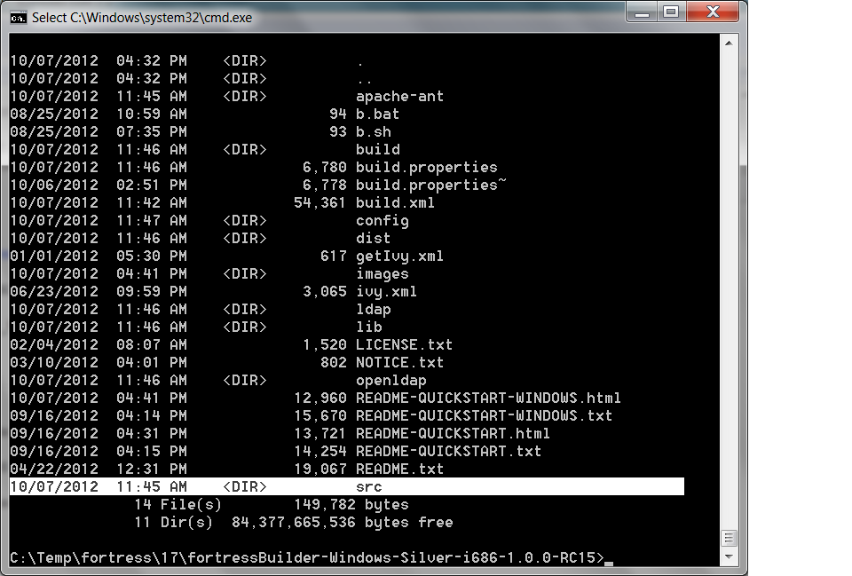
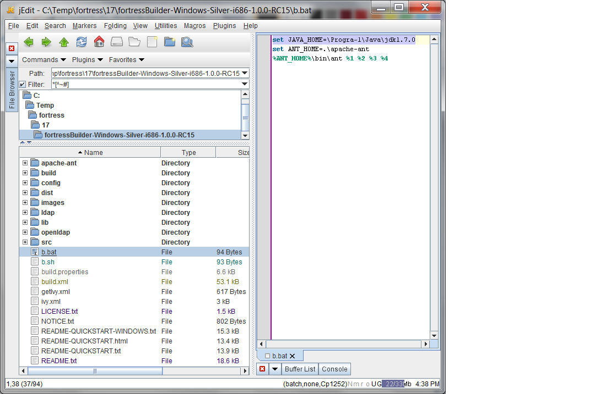
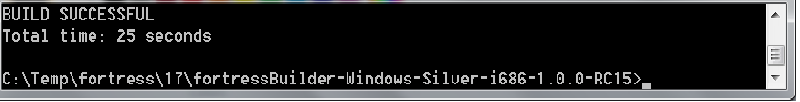
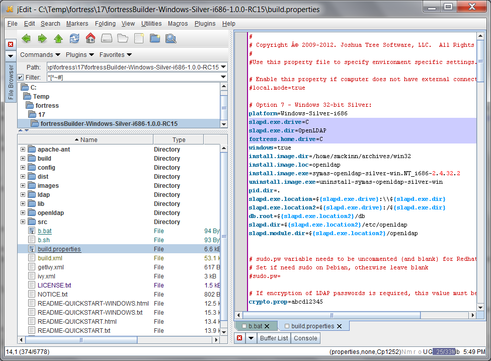
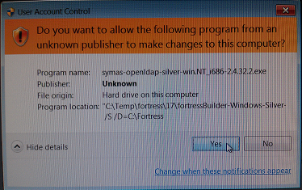
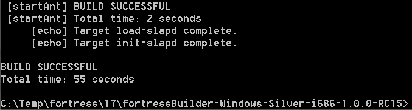
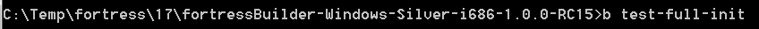
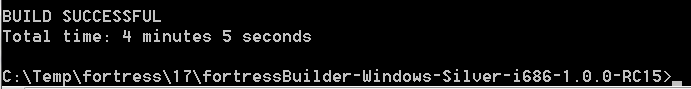
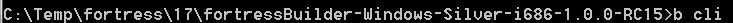
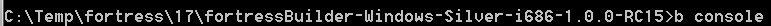

These instructions are intended for new users who want to quickly learn how to use Fortress and OpenLDAP IAM software on Windows platform.
Follow them carefully and OpenLDAP will be installed, configured, loaded, and ready to use by Section IV
System Prerequisites
The following steps are required...
- Internet access to retrieve binary dependencies from online Maven repo.
- Java SDK Version 6 or beyond installed to target environment
NOTE: The Fortress build.xml may run without connection to Internet iff:
- The binary dependencies are already present in FORTRESS_HOME/lib folder
- Local mode has been enabled on target machine. Local mode can be enabled by adding this property to build.properties: local.mode=true
Guidelines and Tips for first-time users
- In the document that follows, when you read [version] or [platform] substitute with current package info. For example - if the downloaded package version is 1.0.0 and platform is 'Debian Silver i386', the instructions show fortressBuilder-[platform]-[version].jar your file name would be fortressBuilder-Debian-Silver-i386-1.0.0.zip
- Does your target machine OS end with an X? Go to README-QUICKSTART.html
- The source code for this project is located in FORTRESS_HOME\src folder.

-
Instructions to extract and configure Fortress Builder Package to Target System
- Copy fortressBuilder-[platform]-[version].zip to hard drive on target server env.
- Extract the zip. The location for archive can vary according to requirements. The location of package will be referred to as FORTRESS_HOME later on.
-
Instructions to run the Fortress Ant Build
-
From FORTRESS_HOME root folder, edit the b.bat script to point to java home:
set JAVA_HOME=\Progra~1\Java\jdk1.7.0

-
Run the distribution target:
b.bat dist
Note: The b.bat file referred to here uses Ant package that is local to Fortress quickstart package.
-
Verify it ran correctly according to Ant:
BUILD SUCCESSFUL

You may now view the project binaries and documentation located under FORTRESS_HOME/dist.

-
Instructions to run the Builder to Install OpenLDAP, configure and load with seed data
Warning: This target is destructive as it reinstalls and reloads the OpenLDAP server program, configuration and data.
Do not point this at OpenLDAP server that is in use. It will disrupt user access and clear out all old entries including Users, passwords, policies, etc.
-
From FORTRESS_HOME root folder, edit the build.properties file, setting the 3 properties below to match your environment:
slapd.exe.drive=C <-- contains the drive letter for openldap server
slapd.exe.dir=OpenLDAP <-- contains the folder to load openldap server binaries
fortress.home.drive=C <-- contains the drive letter that you extracted fortress' builder package to.
If you are not sure, what to use, the defaults usually work. Here's a screen shot of the build.properties.

Note: You will need to reply 'Yes' to the pop-up message:

Note: You will need to reply 'Allow' to the pop-up security warning message if you intend to allow other machines to communicate with ldap server:

-
From FORTRESS_HOME root folder, enter the following command from a system prompt:
b init-slapd
-
Verify it ran correctly according to Ant.
BUILD SUCCESSFUL

-
After above step completes, OpenLDAP will be installed, configured and loaded with fortress bootstrap config. This
step also runs provisioning scripts which may be tailored according to requirements. Check out the xml load scripts
in FORTRESS_HOME/ldap/setup folder.
-
Point your preferred LDAP browser, ours is Apache Directory Studio, to the installed directory.
The configuration parameters you'll need to browse can be found in the generated 'slapd.conf' file.
To view data stored in default database:
suffix "dc=jts,dc=com"
rootdn "cn=Manager,dc=jts,dc=com"
rootpw "secret"
The root pw will be encrypted before stored in slapd.conf

To view data stored in audit log database:
suffix "cn=log"
rootdn "cn=Manager,cn=log"
rootpw "secret"
The log root pw will be encrypted before stored in slapd.conf

Instructions to regression test Fortress and Symas OpenLDAP on target machine
- From FORTRESS_HOME root folder, enter the following command from a system prompt:
b test-full-init

- Verify these tests ran with no ERRORS.
BUILD SUCCESSFUL

-
To re-run these tests:
b test-full
Note 1: WARNING messages in test output are good as these are negative tests in action:

Note 2: If you made it this far without junit or ant ERRORS, the Fortress and OpenLDAP IAM system are certified to run on your machine.
Note 3: These tests load tens of thousands of records into your newly installed directory.
The 'init-slapd' target may be re-run after the 'test-full-init' and 'test-full' targets have completed. This will delete the test data from the directory
and restart directory with a clean slate.
Instructions to run the Fortress Command Line Interpreter (CLI) utility (optional)
This command line tool provides an interactive session with the user based on a simple command line syntax.
-
To start the CLI, enter:
b cli

Which will bring up the command interpreter:

-
enter the command:
review fuser -u demo

This example will return all users with userId that begins with 'demo':

-
To learn more about the CLI and what it can do, follow instructions in the command line interpreter reference
manual in the javadoc located here:
Command Line Interpreter
Note: if javadocs are not found, go to Section VII
Instructions to run Fortress Console (optional)
For tasks like one-time setup of new users, password resets, searches
the Fortress Console application can be used.
-
From FORTRESS_HOME root folder, enter the following command
from a system prompt:
b console

-
Console Screenshots...
-
Main Menu:

-
Enter choice and follow the screen prompts to edit RBAC data:

-
Enter choice and follow the screen prompts to search RBAC data:

-
Enter choice and follow the screen prompts to test RBAC policies:

-
Enter choice and follow the screen prompts to setup ARBAC delegated policies:

-
Enter choice and follow the screen prompts to search through the AUDIT log:

Instructions to generate and view Javadoc (optional)
-
Run the javadoc target:
b javadoc
- Navigate to where docs are genned:

- Open 'index.html' using your preferred HTML Browser:

- The javadoc provides coverage of the Fortress APIs and also provides explanations on how RBAC, ARBAC, PW Policies and Audit work.
-
Good places to start learning about Fortress:
More Utilities
Other execution targets you may find useful:
-
'test-samples' - contains examples of how the Fortress API's work
check out the following javadoc for more info on the samples package:
Samples Javadoc
-
'admin' - provides an XML-centric way to provision RBAC data policies and user accounts.
check out the following javadoc for more info on this utility:
Fortress Ant admin script utility document
- 'encrypt' - interface to jacypt encryption utility
- 'start-slapd' - Starts OpenLDAP on target machine.
- 'stop-slapd' - Stops OpenLDAP on target machine.
Note: for slapd commands sudo or elevated privileges may be required.
- display all ant targets available:

Copyright (c) Joshua Tree Software, LLC, 2009-2012 All Rights Reserved.